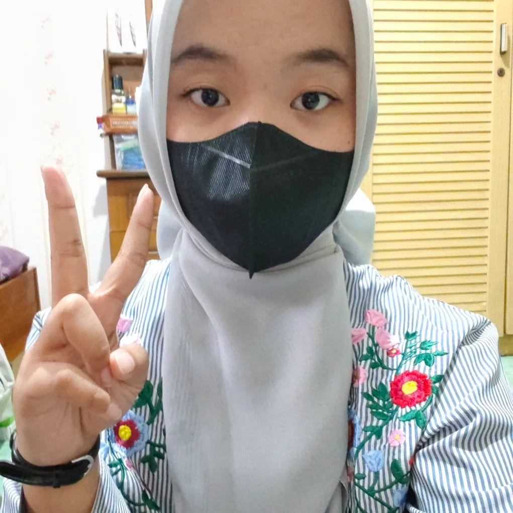

KARINA AULIA WULANDARI
S1 Teknik Informatika
KEAHLIAN
- Marketing
- Analis Data
- Komunikasi
SOFTWARE
- Microsoft Word
- Microsoft Excel
- VS Code
PROFIL
Saya adalah mahasiswa Teknik Informatika yang memiliki fokus pada pengembangan antarmuka web yang efisien dan responsif. Memiliki pengalaman dalam mengelola proyek mandiri seperti pembuatan sistem inventaris sederhana dan mahir menggunakan Bootstrap untuk mempercepat proses styling. Saya memiliki komitmen tinggi untuk terus belajar dan mampu beradaptasi dengan teknologi baru secara cepat.
PENGALAMAN KERJA
Junior Web Developer
2023 - 2024
PT Sinergi Teknologi Indonesia (Data Sintetis)
- Mengembangkan antarmuka landing page yang responsif menggunakan framework Bootstrap.
- Melakukan optimasi pada struktur kode HTML dan CSS untuk meningkatkan kecepatan muat halaman.
Staff IT Support
2021 - 2022
CV Digital Mandiri Semarang (Data Sintetis)
- Bertanggung jawab atas pemeliharaan rutin perangkat keras dan jaringan internal perusahaan.
- Mengelola basis data inventaris menggunakan Microsoft Excel secara terstruktur.
PENDIDIKAN
S1 Teknik Informatika
2022 - 2026
Institut Teknologi Perusahaan Listrik Negara